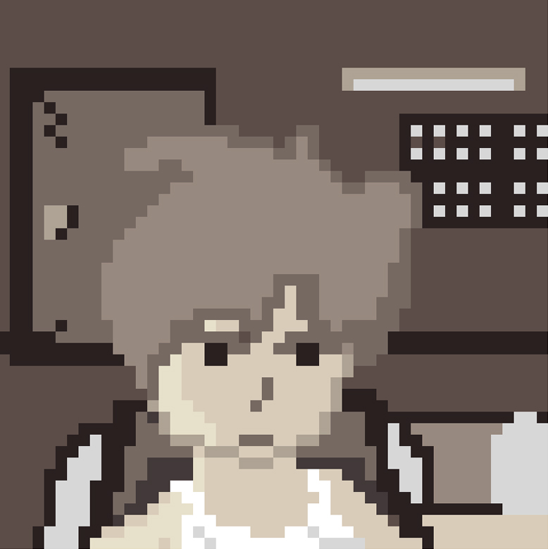
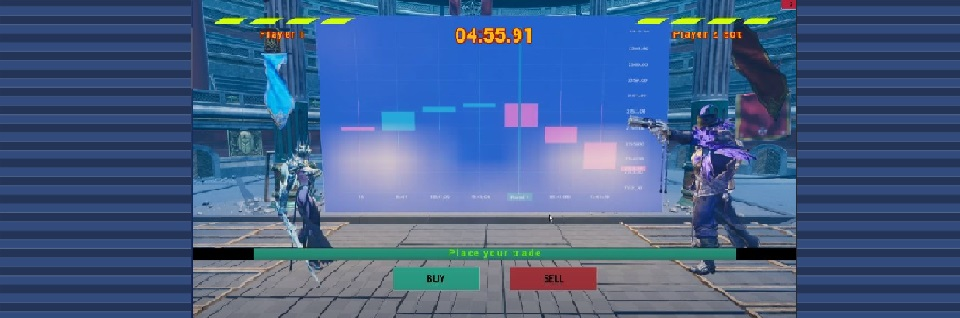
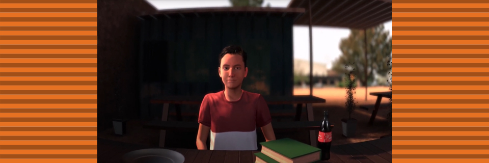
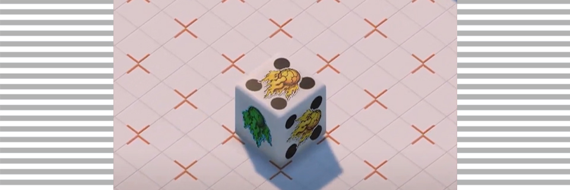
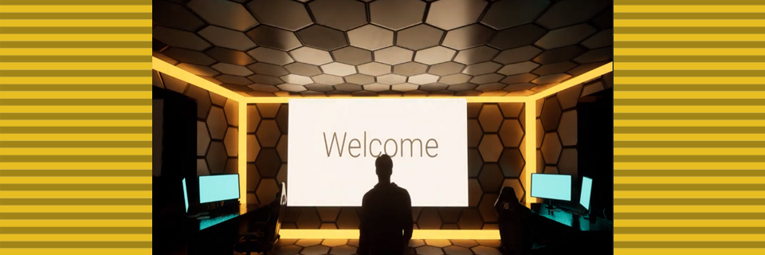
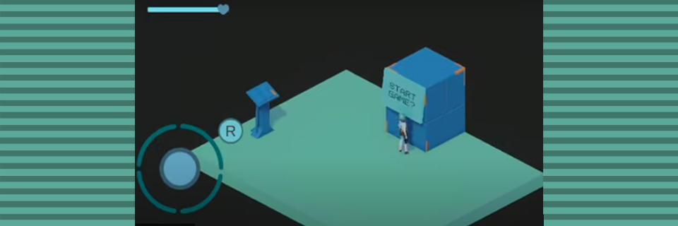
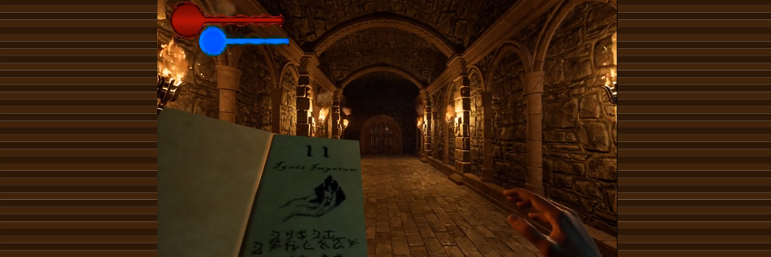
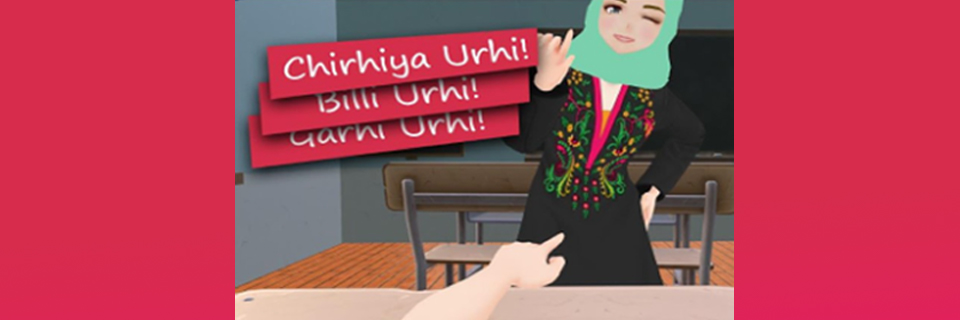
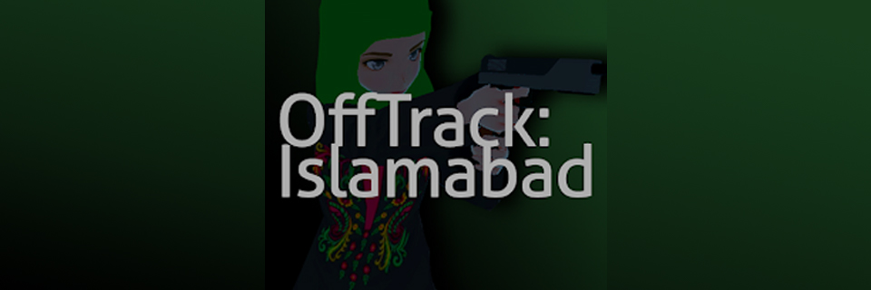
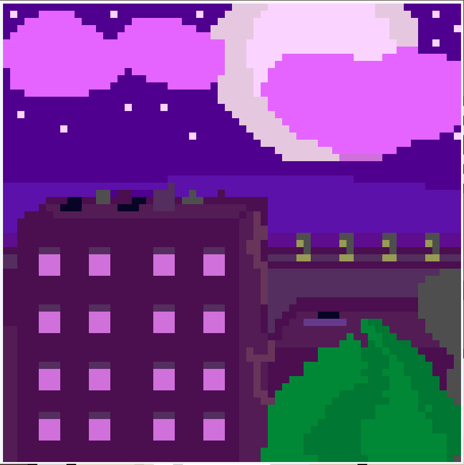

A little about me

My name is Shehryar Malik and I am very passionate about gaming. I started learning game development at a very young age and I have experience in almost every aspect of game development although I found programming to be my biggest passion. I have worked on most modern game engines but my choice is Unreal and Unity.
This website serves as my portfolio, where I will publish things that I am working on. I have worked on different types of games out of which I love working on hyper localized games, in fact two of my best games were localized for Pakistan, Offtrack:Islamabad and Chiriya Urhi. You can check them out in the projects section.
I try to keep up with the ever evolving game development industry. That's why I keep experimenting and creating different game mechanics to improve my skills as a gameplay programmer. You can check out my latest work in the experiments section.
I appriciate any kind of feedback. If you want to get in touch with me, head over to the contact section.
Thank you and I hope you like my work :)
Projects
Project UTC

Lead Developer for a "Gamified" Forex Binary Options Platform.
Project UTC demo:
Unity VR Avatar for ChatGPT

A Unity VR Avatar powered by ChatGPT. You can have conversations with the A.I in a 3D Environment.
Unity VR AI demo:
Unity ability system: Die abilities

I developed a flexible ability system in Unity, and this is one of the ideas I've been playing with. The die can attach different ability stickers on each face to acquire new abilities. After using an ability, the die switches to a random one. I've had this idea for a while and created it for fun, but I might give this project more time. The Ludo piece enemy is next!
Unity Die Abilities Demo:
a promotional video using Metahumans and Vroid

Just a promotional video I created, using Metahumans (Unreal) and Vroid (Unity), while learning how to animate characters. This is the first time I used motion capture (using Iphone). It was a great experience.
Metahuman Vroid demo:
GateRunner (Winter Gamejam 2023)

My submission for Mindstorm's Winter game jam 2023. I consider this my best unity game so far. Managed to get modular design just right.
The theme was Puzzles this time. The game is procedurally generated, each area has a "gate" that has a logic gate related puzzle that players need to solve to continue while fighting off glitches.
Gameplay of Gaterunner:
Doomage Demo

I had an idea for this game for a while, a procedurally generated mixture of doom and rogue like games.
Created in Unreal. Ignoring some graphics glitches, it turned out really good. It is just a demo for now but I will definitely complete it if I get the chance.
Gameplay of Doomage:
Chirhiya Urhi

I created chirhiya Urhi for Mindstorm Studios' Winter Game Jam 2022. The theme was surprisingly "All things desi". I had just created a hyper localized game for my FYP (Offtrack Islamabad) so I was already familiar with creating Pakistani localized content.
I chose the classic kids Chirhiya Urhi game for the project as everyone in Pakistan knows about it, and gave it anime-type setting.
I created the game in Unity engine, made all the assets in blender and Vroid studio. The game won the "Most Indigenous Idea" award in the game jam. This was a wonderful experience.
Following is the entire gameplay of the game:
You can download the APK of the game from here if you would like to try it yourself.
Offtrack: Islamabad

Offtrack: Islamabad, an attempt at my dream game. This was my University's final year project, a hyper localized game for Pakistani audience. The game is a third person action shooter game, inspired from
games like resident evil. This was my first serious project and I was doing it solo so things didn't exactly work out as I had imagined but It was overall the best learning experience I got in game development.
The game is released on Google Playstore, which was another achievement for me. You can check out the game from its store page: Offtrack: Islamabad.
Experiments
UE Metahuman Lipsync Test
Metahuman test I made while learning how to do lipsync. This was done using Iphone's Mocap and Keyframing combined.
Topdown units (XCOM like)
Top down, XCOM like gameplay experiment.
Cloth simulation ghost
A little experiment with Unreal's cloth simulation.
Music Invaders
Sound analysis based gameplay
A little experiment with Unreal's Audio Synesthesia analysis. The spheres are set to react on a certain threshold of audio frequencies of a audio file.
The left most is set to Midrange while the other two are Bass. When the threshold is reached they spawn a projectile aimed at the player. This mechanic can be used to create music based games.
Basic Procedural Generation
Basic procedural map Generation that I came up with while learning Procedural Generation. Each tile finds a good location to spawn the next tile using the little spheres around it.
Lights Puzzle Level
A simple puzzle level using lights, I created this as an excersie of Reality forge's Unreal course that I was taking.
Lyra Race Gamemode
A time race gamemode that I made while experimenting with Lyra.
G develop - 2d Click to move character
This is one of my many unfinished projects, I was making it for G-Develop's second GameJam but couldn't complete (Classic scope creep). The game was supposed to be
inspired from Neighbours from Hell. Even though I didn't finish it, I learned G-develop and 2D character animations using Illustrator and Dragonbones. With this project I realized 2D animations
are much harder than 3D (atleast for me).
achievements

Here are some of my achievements that I am proud of. So far Game development has been
a tough but rewarding journey.
I plan to continue learning new things and grow this list as much as I can :)
:> Won the Most "Indigenous Idea" award in Mindstorm Studios' Winter Gamejam 2022
for my submission "Chiriya Urhi"!
:> Got a job at Optera Digital as an Unreal developer!
:> Published a game on Google Play Store: "Offtrack:Islamabad"!
Contact
Feel free to contact me anywhere!
Email: Shehryar.malik07@gmail.com
Contact number: +92-332-9318456